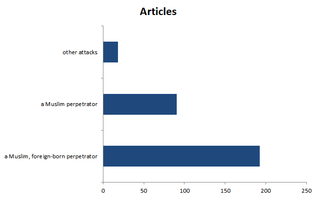

The terrorist attacks
by Jia Yumeng (Beijing Foreign Studies University)
Posted on August 23, 2017 at 18:00 PM

When people think about a terrorism conducted by Muslim people then they come into conclusion that it is related to all the Muslim.
In May the attacks in Westminster, Manchester and London Bridge has killed 36 individuals and injured at least 217. It is the latest in a long list of violence stretching back to the 1990s.In the 1990s, a wave of bombings came from the Irish Republican Army, which fought against British rule in Northern Ireland.
Meanwhile, there are now more than 45 countries around the world where the Foreign Office believes a terror attack is "very likely" to be attempted.
Below is a chart showing that how many terrorism attacks for each country in the world. Iraq suffered the most due to terrorist attacks than any other country in the world. Following Iraq, it is Pakistan, India, Afghanistan and Colombia on the top 5 since 1970.

From the chart below we can see how terrorism attacks changes from year to year since the year 1970 to 2015.

From this chart we can see how many terrorist attacks occurred in history in different countries.

Terrorists vs peacemakers?
On August 17 the Spanish terror attacks killed 14 people. An ISIS-affiliated news agency said the terror group took responsibility for the van atrocity.
The Spain terror attacks put Muslims in Catalonia under harsh spotlight.
When people think about a terrorism conducted by Muslim people then they come into conclusion that it is related to all the Muslim. The 1.3 billion Muslim held responsibility for this and they should apologize for it.
But why should Muslim have to apologize for a violence that they have no connection to?
This comes to why do people have this prevalent idea?
A reason of this is that a research shows that attacks by Muslim perpetrators received on average 449% more coverage than other attacks between 2011 and 2015.
For those five years, the researchers found, Muslims carried out only 11 out of the 89 attacks, yet those attacks received 44 percent of the media coverage. Overall, the authors report, "The average attack with a Muslim perpetrator is covered in 90.8 articles. Attacks with a Muslim, foreign-born perpetrator are covered in 192.8 articles on average. Compare this with other attacks, which received an average of 18.1 articles.
The same statistical assumptions being used to falsely portray Muslims as violent people can be used more accurately to portray Muslims as peaceful people. When we look at the number of Muslims who have won Nobel Prize it is surprising that seven have won it in Nobel Peace Prize history.
The Georgia State researchers conclude: "By covering terrorist attacks by Muslims dramatically more than other incidents, media frame this type of event as more prevalent. Based on these findings, it is no wonder that Americans are so fearful of radical Islamic terrorism. Reality shows, however, that these fears are misplaced."
Source: Global Terrorism Database